Version 1.0 · translated article
Controlling a LEGO Mindstorms EV3 robot in first person
The screenshots are from the original article and show the app's Russian interface; the text describes each screen in English.
A robot built from the LEGO Mindstorms EV3 kit can easily be controlled remotely in first person. For this you additionally need two smartphones, with the RoboCam app installed on one of them. Let's get to know RoboCam in more detail and learn how to use it.

This article describes the first version, 1.0, of RoboCam. All the articles about RoboCam can be found here. You can install RoboCam from Google Play, or download the APK and install it manually: the regular version of RoboCam or the version of RoboCam that uses RenderScript (for some older smartphones); both are release 1.4.5. There is also an APKPure mirror.
First let's watch the video showing the first-person-controlled robot I call the EV3 Explorer. Besides driving in any direction, the robot can raise and lower its head, i.e. the frame the smartphone is attached to. That means you can look not only to the sides but also up and down.
What do you need for the experiment?
To repeat the experiment you see in the video you need the following:
- A robot built from the LEGO Mindstorms EV3 kit.
- An Android smartphone with a camera and the RoboCam app installed. Android 2.3 and later is supported. The phone must have at least one camera, plus Bluetooth and Wi-Fi modules.
- A smartphone or tablet with a modern browser that supports HTML5. Recent versions of Google Chrome, Yandex Browser, Firefox and Opera work well and have been tested. The operating system can in principle be anything (Android, iOS or Windows), but full tests were done only on Android. The smartphone or tablet needs at least a touch screen (preferably recognising at least 2 touch points) and a Wi-Fi module.
Further on in the article I give the theory and describe the steps you need to take to repeat the experiment.
Connection diagram
First, let's see how all the devices listed above are connected to each other. The picture below illustrates it best.

As you can see, RoboCam is installed on smartphone 1. This smartphone is attached to the robot and connected to it over Bluetooth. Commands controlling the motors go from smartphone 1 to the EV3, and sensor information comes back.
The 2nd smartphone or tablet connects to smartphone 1 over Wi-Fi. Smartphone 1 and smartphone or tablet 2 must be connected to the same router. Joystick coordinates go from smartphone or tablet 2 to smartphone 1, and the video stream from the camera comes back.
How the EV3 is controlled
To better understand how the EV3 robot is controlled, look at the following diagram.
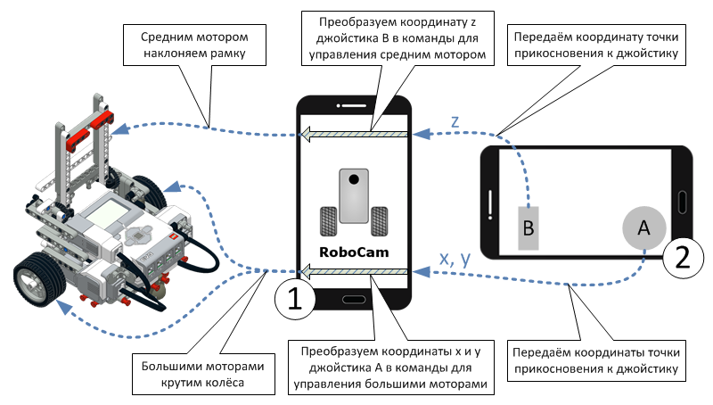
When you start touching joysticks A and B, smartphone or tablet 2 sends the touch coordinates to smartphone 1, which turns them into commands for the EV3 motors. How the coordinates are converted depends on the RoboCam settings. We will talk about the settings in more detail below.
Building the robot
To repeat the experiment you first need to build the robot you will control. It can be a simple two-wheeled robot, a robot car, or a robot with a complex drive mechanism. It really doesn't matter what your robot is like, because RoboCam is flexibly configurable and you can control a robot of any design with it. The main thing is that you can fix the smartphone to your robot so that the camera points forward, in the direction of travel.
I recommend starting with a simple model. If you have the LEGO Mindstorms Education EV3 set, you can build the EV3 Explorer you see in the photo and video at the start of the article. Here is the EV3 Explorer build plan:

| EV3 Explorer build instructions Version: 2 | |
Instructions for building the EV3 Explorer robot from the base LEGO Mindstorms Education EV3 set (45544). In version 2 the frame is fixed more firmly and doesn't fall off. |
|
| 04.06.2016 4.95 MB 15561 |
Preparing the Android smartphone and the RoboCam app
RoboCam runs on smartphones or tablets with Android 2.3 and later. The device must have some built-in camera and Bluetooth and Wi-Fi modules. The app is free; you can install it from Google Play or download and install it manually. Here is the RoboCam page. To install, press the «INSTALL» button and accept the required permissions by pressing «ACCEPT».
For a manual install there are 2 versions: the regular version of RoboCam and the version of RoboCam that uses RenderScript (for some older smartphones); both are release 1.4.5. The APKPure mirror carries the Play Store release.
After installing, open the app. On Android 6 and later you immediately see a request for permission to use the camera. We definitely need the camera, so press «ALLOW».
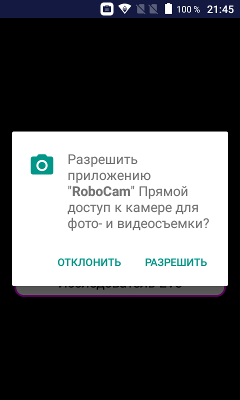
Once the app opens you see three round buttons for the main actions, and the camera image in the background.

The green button on the left starts and stops the RoboCam server, which is needed for connecting smartphone or tablet 2, see the diagram above. The button also shows whether the server is running. In the picture the button background is white, which means the server is not running. The hint at the top says the same. You can start or stop the server at any time by pressing this button.
The middle purple button connects to the EV3 robot. The button also shows whether the smartphone is connected to the robot. In the picture the button background is white, which means the robot is not connected. This button has a hint too, right under the button: the top line shows the connection state (in the picture the text «EV3 not connected») and the bottom line shows the name of the current robot settings (in the picture «EV3 Explorer»).
The button on the right opens the RoboCam settings. If you use my EV3 Explorer you don't need to configure anything else, because right after the first launch the settings named «EV3 Explorer» are selected by default. If your robot is different you will first have to dig around in the settings. We'll talk about that below.
Starting the RoboCam server and connecting to it
Let me say straight away that it doesn't matter which you do first: start the RoboCam server or connect the smartphone to the robot. You can do it in either order.
So, once the app is installed on smartphone 1 (see the diagrams above) and open, you can start the RoboCam server. Press the green button on the left; the button starts blinking and the hint says «Initialising RoboCam server...». After a while, once the server has started, the button background turns green and the hint says «RoboCam server is running».
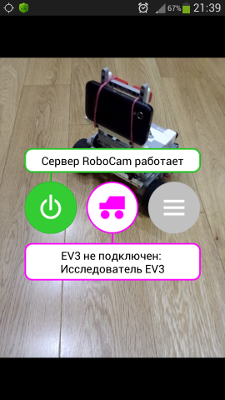
If the smartphone is not yet connected to your Wi-Fi router (as in our picture), it is time to do that. Once it is connected, the second line of the hint at the top shows the address for connecting to the RoboCam server. When turning the server on it makes no difference whether you start the RoboCam server or Wi-Fi first.
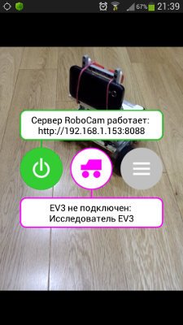
Now you can connect to the RoboCam server. Take the second smartphone or tablet (I will use a tablet), make sure it is connected to the same Wi-Fi router, open a browser and go to the page at the address shown in the hint in RoboCam (in the picture «http://192.168.1.153:8088»). Use one of the browsers mentioned above. If you did everything right, a page for entering a login and password loads in the browser. Enter your login and password and press «Log in». If you haven't changed anything in the settings since installing, the default login is «admin» and the password «123».
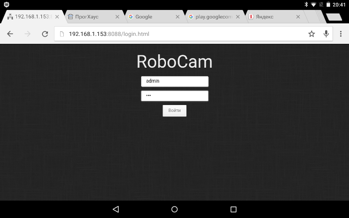
The main page of the RoboCam server then opens, showing the picture from the camera of smartphone 1 (see the diagram above).

As you can see, smartphone 1 is in portrait orientation and my tablet in landscape. You can turn smartphone 1 so that it is also in landscape orientation. The picture on the tablet then changes to landscape automatically.
Note that the orientation does not change if you have locked smartphone 1.

To make the image fill the screen, press the icon at the top right of the page. This removes all the buttons and browser tabs we don't need, and the camera image becomes larger.
at the top right of the page. This removes all the buttons and browser tabs we don't need, and the camera image becomes larger.

Connecting RoboCam to the EV3
Before connecting RoboCam to the EV3, make sure Bluetooth is on for both your EV3 robot and the smartphone and that they are paired. Also make sure the motors are connected to exactly the ports given in the robot settings. The name of the current settings is written in the hint on the second line under the middle button; in the picture below it is «EV3 Explorer». If you built the EV3 Explorer to my plan (see above) and haven't changed the settings after installing RoboCam, you can be sure everything is set up correctly. The settings are described in detail below.
So, if everything is ready, press the central purple button. If Bluetooth turns out to be off on your phone you will see a request to turn it on. Press «Yes».
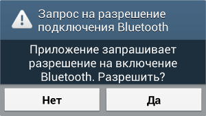
Next you will see the button start blinking, and a list of Bluetooth-paired devices appears in place of the hint. Choose your EV3 robot here (in the picture it is «EV3», but your EV3 may have a different name set).
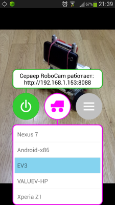
The app then connects to the EV3.
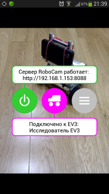
If the client is connected to the RoboCam server at this moment, you will see the joysticks appear (the rectangular and round joysticks in the picture below). After that you can control the robot straight away.

With the default EV3 Explorer settings you have two joysticks: a round one and a vertical one (see the picture above). The vertical joystick controls the frame that holds the smartphone, and the round one controls the robot's movement. The palm icon at the top right swaps the joysticks around, so you can quickly switch the layout for left- or right-handed use. More about joysticks below.
Stopping the RoboCam server and disconnecting the EV3
When you have finished controlling the robot, it is recommended to stop the RoboCam server and disconnect the EV3 from the smartphone before closing the RoboCam app. You can do this in either order. To stop the server press the green button on the left. The button background then turns white and the hint shows «RoboCam server is off». To disconnect the EV3 press the central purple button. The button background then turns white and the top line of the hint shows «EV3 not connected». The motors stop or return to their initial position, depending on the settings.
RoboCam server settings
To open the settings, press the grey button on the right.
The settings are split into 2 parts: server settings and robot settings. First let's see what is in the server settings. Choose «Server».

The server settings fall into 2 groups: camera settings and security settings. In the camera settings you can choose the camera (front or rear), the image size and the JPEG quality. The smaller you set the image size, the smoother and faster the video reaches the client, but the picture quality gets worse. JPEG quality affects the video in the same way: the better the JPEG quality (90 percent or more), the better the picture but the slower the speed; and the worse the JPEG quality (40 percent or less), the faster the speed but the worse the picture. Choose what is best for you.
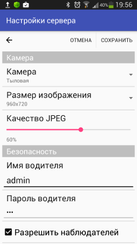
In the security settings you can change the driver's name and password (by default the name is «admin» and the password «123»). Observers are also enabled by default. Observers can see the camera image alongside you but cannot control the robot. For an observer you can also set a name and password (by default the name «guest» and password «123»). To turn observers off, untick «Allow observers».
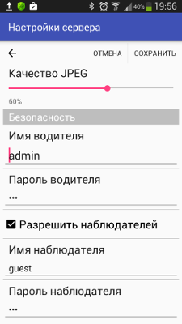
The number of drivers and observers is not limited, but connecting more than one driver can cause conflicts in simultaneous control and video streaming. It is not recommended to connect more than one driver to the RoboCam server. A large number of observers can also hurt video transmission. It is best to reduce observers to a minimum or turn the feature off altogether.
After changing the settings you can save them by pressing the «SAVE» button at the top right, or leave without saving by pressing the «CANCEL» button or the arrow at the top left. After the server settings are saved, clients may be disconnected and will need to connect again.
List of robot settings
The second part of the RoboCam settings is the robot settings. Press «Robot» to go to the list of robot settings.
In the list of robot settings you can see the settings for all your robots. You can add or delete settings at any time with the «ADD» or «DELETE» button at the top right. Right under the buttons you see the current settings. This item is how you switch between the settings for your robots. Now let's look at the EV3 Explorer settings. To do that, choose «EV3 Explorer» in the list.
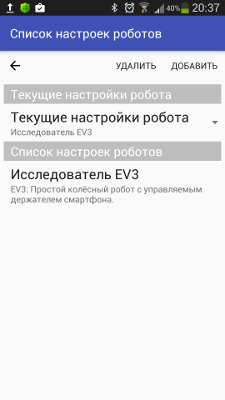
At the very top is the general information: the robot's name and description. The name and description are shown in the list so you can easily find the settings you need. The name is also shown on the app's main screen under the central button you use to connect to the EV3. The joystick settings come next.
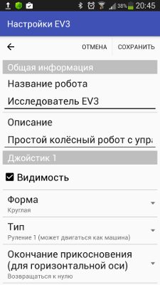
You can configure up to 4 joysticks in total, but only one pair of joysticks, 1-2 or 3-4, is visible on the client's screen at a time. Even if you use joysticks 1 and 3 they will not be visible at the same time, because they belong to different pairs; you will see either joystick 1 or joystick 3. Each joystick's visibility is switched on with the «Visibility» checkbox. If you have enabled 2 pairs of joysticks, a button appears on the client screen for switching between the pairs.
for switching between the pairs.
So in the settings you can see the groups «Joystick 1», «Joystick 2», «Joystick 3» and «Joystick 4». Each holds the settings for one joystick. Let's look at the settings for «Joystick 1». The «Visibility» checkbox, as you have understood, shows or hides the joystick. If the checkbox is not ticked, the settings for that joystick are hidden too.
A little lower, in the drop-down list «Shape», you can choose the joystick's shape, and with the shape its characteristics. The following joystick shapes are available: vertical, horizontal, round, square, arrows, vertical arrows and horizontal arrows. Here is what these joysticks look like:

The vertical joystick only senses the height of the touch, i.e. it doesn't matter whether you touch it further left or right, only at what height. The touch coordinate for it ranges from -100 at the very bottom to 100 at the very top, with 0 in the middle.
The horizontal joystick works the same way, but horizontally. It doesn't matter at what height the touch happens, only whether it is to the left or right. Here the touch coordinate is calculated horizontally from -100 at the far left to 100 at the far right, with 0 in the middle.
The round and square joysticks are similar. They determine the touch coordinates on both the horizontal and vertical axes, again from -100 to 100 with 0 at the centre. But in the round joystick, touches cannot go outside the circle. That is, if the touch point is outside the circle, the point taken is where the line from the touch point to the centre of the circle crosses the circumference. This is easier to see in the picture below.
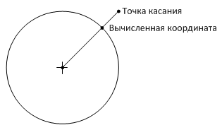
The arrow joysticks are not sensitive to the touch point; what matters is which arrow you touch. If you touch the up arrow, the joystick's vertical coordinate is taken to be 100 and the horizontal one 0. For the down arrow the horizontal coordinate is also 0 and the vertical one becomes -100. Likewise for the left and right arrows: the vertical coordinate is 0 and the horizontal one is -100 and 100 respectively.
Right under the shape you choose the joystick type in the drop-down list «Type». You can choose one of these values: «Independent motors», «Steering 1», «Steering 2» and «Mailbox».
Joysticks of type «Steering 1» and «Steering 2» let you control a robot with two independent drive wheels, such as the EV3 Explorer. The touch coordinates on these joysticks are converted automatically into motor commands. For the joystick you only have to choose which port has the left wheel and which the right one. That is described a little further down.
«Steering 1» lets you drive a two-wheeled robot like a car. You cannot turn the robot on the spot with it. The closer the touch is to the centre vertically, the lower the speed. «Steering 2» lets the robot spin on the spot.
A joystick of type «Independent motors» converts the horizontal touch coordinate into motor commands independently of the vertical coordinate. For the joystick you have to specify which motor is controlled when the horizontal coordinate changes and which when the vertical coordinate changes. This type of joystick can be used to drive a car in which one motor steers and a second motor turns the drive wheels. In that case the change of the horizontal coordinate is set to turn the first motor and the change of the vertical coordinate to turn the second motor.
A joystick of type «Mailbox» simply passes the touch coordinates to EV3 mailboxes. To bring your robot to life you will have to write an EV3 program that processes these coordinates. With this type of joystick you can build more complex robot control models, because you can implement your own algorithm for converting the coordinates taken from the joystick into motor commands. For example, you could build control for the EV3 Gyro Boy. Joystick 1 passes coordinates to mailboxes named x and y, joystick 2 to mailboxes w and z, joystick 3 to mailboxes a and b and joystick 4 to mailboxes c and d.
The next two settings, «End of touch (for horizontal axis)» and «End of touch (for vertical axis)», determine what happens when you stop touching the joystick. You can choose one of two options: «Return to zero» or «Keep position». Returning to zero makes sense in most situations; for example, if you want the robot to stop when you stop touching the joystick, «Return to zero» is the right choice. Keeping the position is useful when you need to remember the last touch coordinate. It is used, for example, for tilting the EV3 Explorer's frame. This setting is available for all joystick shapes except arrow joysticks.
If you use the joystick type «Independent motors», «Steering 1» or «Steering 2», you will find the port settings for that joystick below. The ports the joystick controls can be added and removed with the «ADD» and «DELETE» buttons. The number of ports is not limited. The first picture below shows the settings for a joystick of type «Independent motors», and the second for a joystick of type «Steering 1» and «Steering 2». As you can see, there is a small difference.
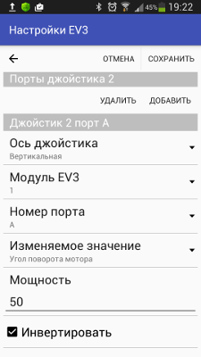
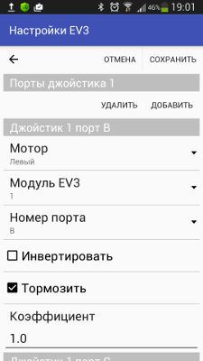
Let's run through the port settings. The «Joystick axis» setting appears only for a joystick of type «Independent motors». There are two options: «Horizontal» and «Vertical». If you choose «Horizontal» the motor reacts only to changes of the touch coordinate on the horizontal axis, and if you choose «Vertical» it reacts to touches on the vertical axis.
The «Motor» setting appears only for a joystick of type «Steering 1» or «Steering 2». Here you choose between «Left» and «Right».
The «EV3 brick» setting is needed if you built a robot using several EV3 bricks connected in a «daisy chain». You can choose a brick number from 1 to 4 here. If you only use one EV3 brick, this must always be 1.
With the «Port number» setting you choose the motor port, A to D.
The «Changed value» setting appears only for a joystick of type «Independent motors». There are two options: «Motor power» and «Motor rotation angle». If you choose «Motor power», the joystick affects the motor's power, i.e. the further from the joystick's centre you touch, the faster the motor turns. If you choose «Motor rotation angle», the joystick affects the motor's rotation angle, i.e. the further from the centre you touch, the larger the angle the motor turns through. In that case the motor's power is set with the «Power» setting. The larger this number, the faster the motor reacts to a change of the touch coordinate and the better it holds the angle.
Ticking «Invert» inverts the calculated power or angle, and «Coefficient» increases or decreases the calculated value.
With «Brake» ticked the motors stop quickly, i.e. they brake. With it unticked the motors keep turning for a while by inertia until they stop completely.
Those are, in fact, all the settings in RoboCam.
Connecting without a router
Now a few tricks that can make RoboCam a little more convenient to use. If there is no router nearby, for example if you are outdoors, you can set up a connection between smartphone 1 and smartphone or tablet 2 directly. To do this, turn on the hotspot on smartphone 1 (in Android the hotspot is usually turned on in the network connection settings). Once it is on, smartphone 1 becomes a Wi-Fi router and you can connect tablet or smartphone 2 to it without any problem. This is what the connection looks like schematically.

You find out the RoboCam server address the same way, from the button's hint. In most cases, for such a hotspot the address is always http://192.168.43.1:8088.
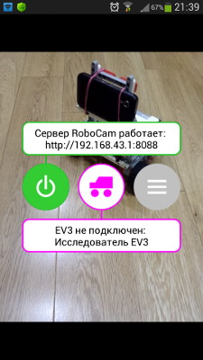
Using smartphone 1 as a joystick
There is one more trick you can do with RoboCam. On smartphone 1 (the one with RoboCam installed) start the server, connect to the robot, and then start a browser on the same smartphone (naturally one that supports HTML5) and go to the address http://localhost:8088. You will see the page for entering a login and password. Log in as a driver. After logging in you see the joysticks and can control the robot. In this case, though, the camera image is not transmitted. Wi-Fi can be turned off.

Summary
I hope I have given enough information on how to use RoboCam. If you have questions about the app or suggestions, you can leave them in the RoboCam community.
All RoboCam versions
- v1.4.2 Turning a smartphone into a robot remote control with RoboCam
- v1.3.1 Building first-person control for an Arduino robot
- v1.2 RoboCam – controlling a robot in first person from a computer keyboard
- v1.1 Importing, exporting, copying and sending robot settings in RoboCam
- v1.0 Controlling a LEGO Mindstorms EV3 robot in first personyou are here